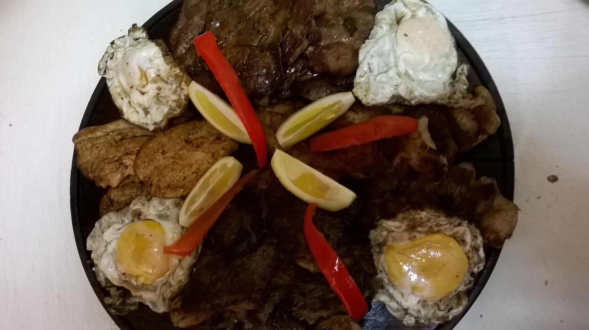
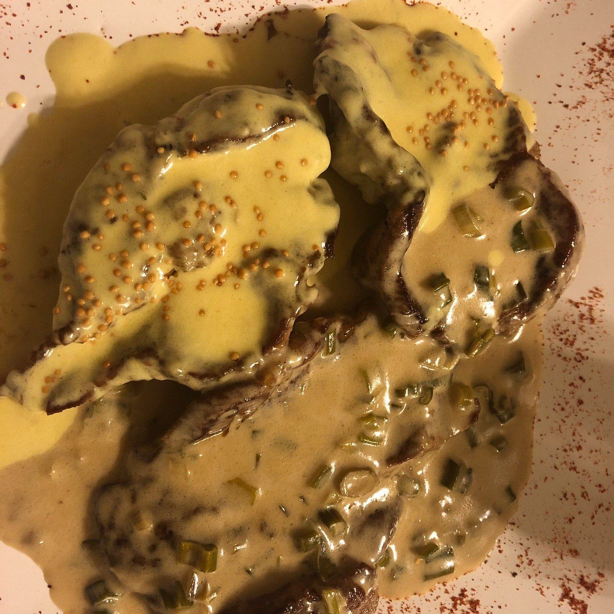
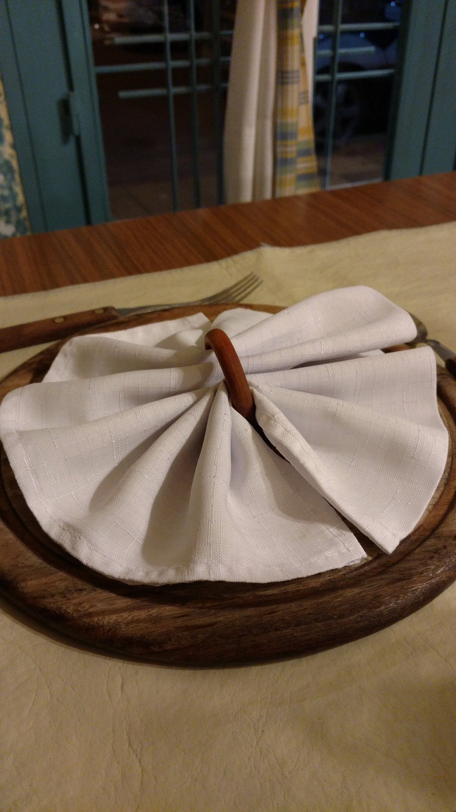
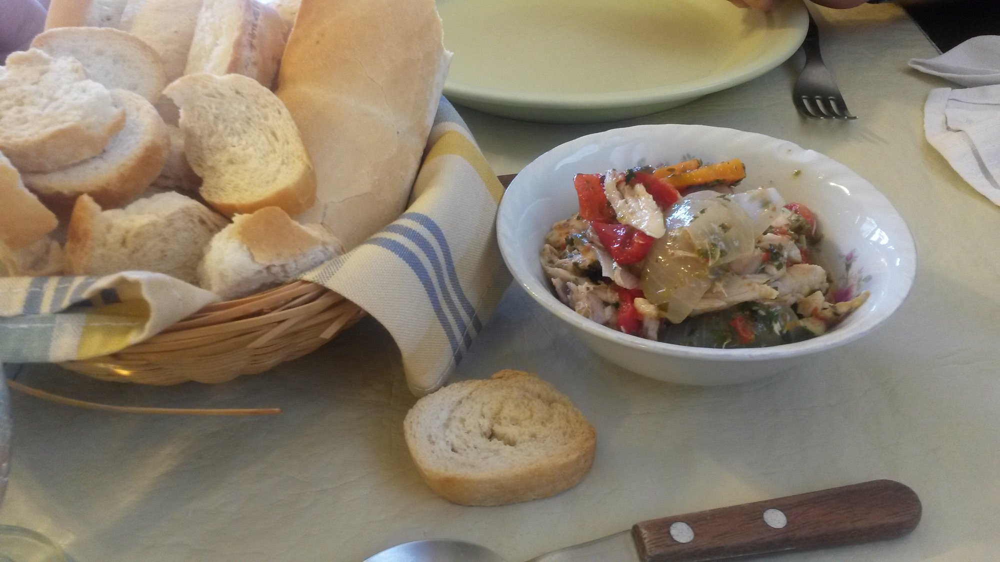

El Molino Restaurante
El Molino Restaurante te invita a vivir una experiencia única, con platos abundantes, sabores caseros y ese toque especial que solo un lugar familiar puede ofrecer. Un rincón cálido en Tandil donde se come bien y se siente mejor
Ambiente y espacio
- Un restaurante pequeño, de ambiente cálido y acogedor, ubicado en lo que era originalmente un garaje, con apenas 7 mesas que crean una atmósfera familiar.
- Decoración sencilla pero agradable, con aire hogareño donde el trato es cercano y el personal notablemente amable.

Gastronomía
- Especializado en cocina casera argentina, destacándose en platos “al disco de arado”: abundantes, sabrosos y tradicionales.
- Entre las opciones más elogiadas están el “popurrí de carnes” (carne vacuna, cerdo, pollo y mollejas), matambrito de cerdo a la pizza, pastel de papas, bife de chorizo a la riojana, rape y pollo generoso.
- Empanadas fritas muy bien logradas, con masa crocante y relleno equilibrado.

Postres y bebidas
- Amplia variedad de postres caseros: flan mixto, budín de pan, tiramisú y helado “El Molino” con galletitas.
- Café cortado elogiado por clientes frecuentes.

Precio y servicio
- Excelente relación precio-calidad: porciones generosas a precios accesibles.
- El personal es amable y flexible, dispuesto a adaptar platos y ofrecer una atención personalizada.

Valoraciones
- TripAdvisor: 4.3/5 (más de 100 opiniones), dentro del top 30 de restaurantes en Tandil.
- Google Maps: 4.6/5 con cientos de comentarios que elogian tanto la comida como el trato familiar.
- Restaurant Guru: Muy recomendado por su cocina tradicional y ambiente acogedor.